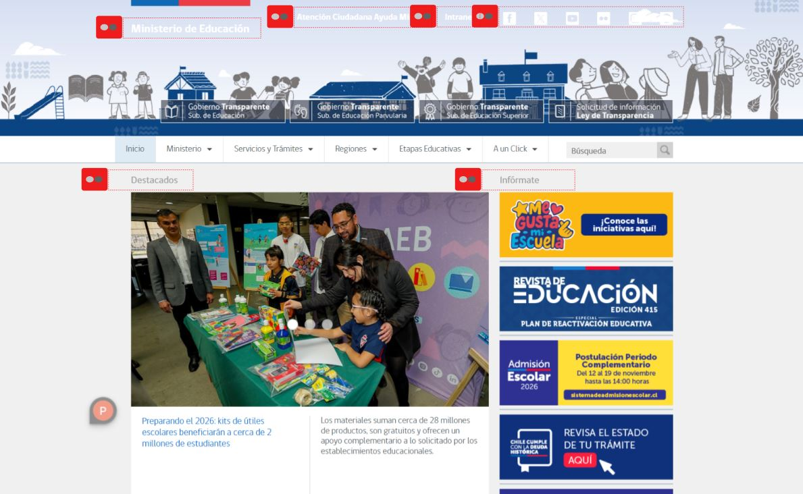
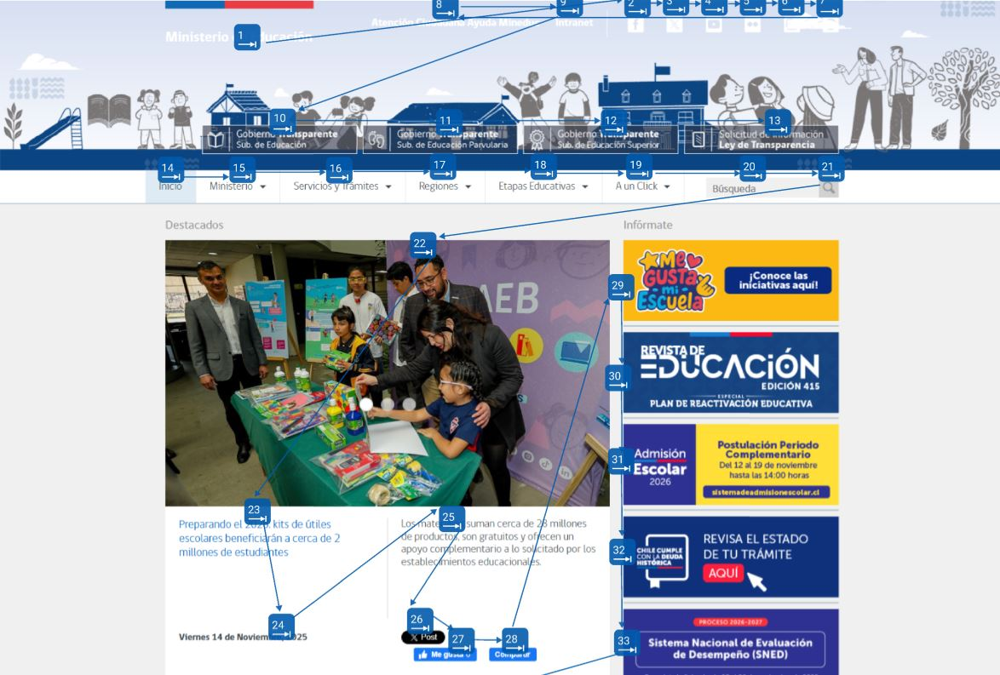
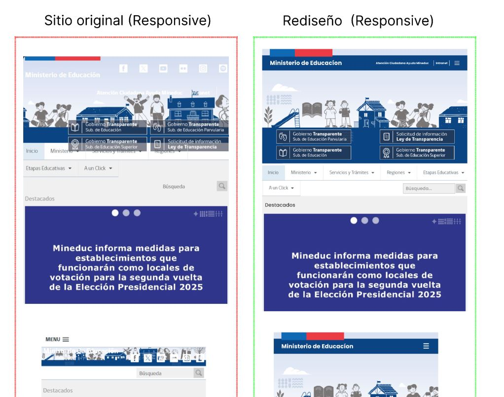
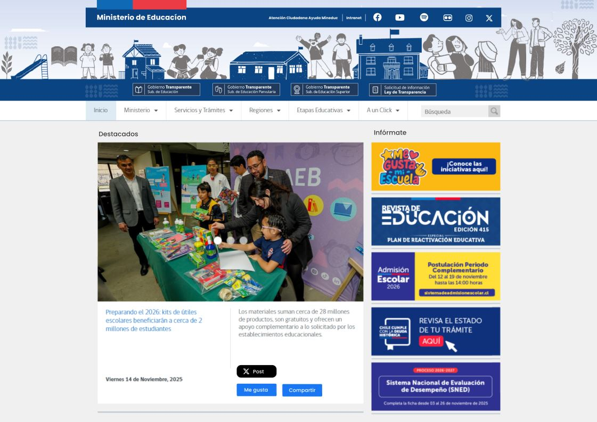

Caso de estudio
Desaloon
Rediseño del sitio de Mineduc enfocado en accesibilidad, aplicando los estándares WCAG para mejorar la legibilidad, navegación y comprensión del contenido en distintos contextos de uso.
Rol: Diseñador UX/UI · Herramientas: Figma · Tipo: Proyecto personal


Problema
Barreras de acceso al contenido
El sitio no fallaba visualmente, pero sí en su capacidad de ser utilizado.
El home del sitio presentaba múltiples problemas de accesibilidad que dificultaban la lectura y navegación, especialmente para usuarios con baja visión o que utilizan tecnologías asistidas. Entre ellos se identificó bajo contraste, uso de transparencias que afectaban la legibilidad, ausencia de textos alternativos y una estructura semántica inconsistente.
Además, la interacción se veía limitada por botones de tamaño reducido, enlaces poco visibles y la ausencia de atributos que permitieran una navegación clara mediante teclado o lectores de pantalla.
Análisis
Evaluación bajo estándares de accesibilidad
El análisis se centró en cómo el sitio respondía a los principios de accesibilidad.
Se evaluó el sitio utilizando los criterios establecidos por el W3C, considerando los principios de Perceptible, Operable, Comprensible y Robusto. A partir de esto, se identificaron fallas en la jerarquía de contenidos, falta de landmarks, contrastes insuficientes y ausencia de soporte para tecnologías asistidas.
Estas deficiencias no solo afectan la experiencia de usuarios con necesidades específicas, sino que también impactan la claridad general del contenido, dificultando su comprensión y recorrido.


Proceso
Definición de criterios WCAG
Se establecieron parámetros concretos para guiar el rediseño.
A partir del análisis, se definieron criterios basados en WCAG 2.1, priorizando la legibilidad, la correcta estructura semántica y la navegación asistida. Se establecieron indicadores clave como contraste mínimo 4.5:1, jerarquía adecuada de encabezados, uso de textos alternativos, implementación de landmarks y estados de foco visibles.
Estos lineamientos permitieron abordar el rediseño de forma estructurada, asegurando coherencia entre diseño visual y funcionalidad accesible.
Solución
Rediseño centrado en accesibilidad
Cada ajuste responde a un criterio funcional, no solo visual.
Se rediseñó la interfaz corrigiendo los problemas de contraste y eliminando transparencias que afectaban la lectura. Se reorganizó la estructura del contenido mediante una jerarquía semántica clara, incorporando encabezados adecuados y landmarks que facilitan la navegación mediante tecnologías asistidas.
Además, se añadieron textos alternativos en todas las imágenes, se ampliaron los elementos interactivos para mejorar su usabilidad y se implementaron atributos ARIA para reforzar la comprensión del contenido por parte de lectores de pantalla.
La tipografía y los espacios fueron ajustados para mejorar la legibilidad y el escaneo visual, generando una experiencia más clara y accesible para distintos tipos de usuarios.

Resultado
Experiencia más clara e inclusiva
El rediseño permite una navegación más clara, mejora la legibilidad del contenido y facilita la interacción para usuarios con distintas capacidades. La estructura del sitio ahora responde a estándares de accesibilidad, permitiendo una experiencia más inclusiva y coherente.
← Volver Ver Behance ↗